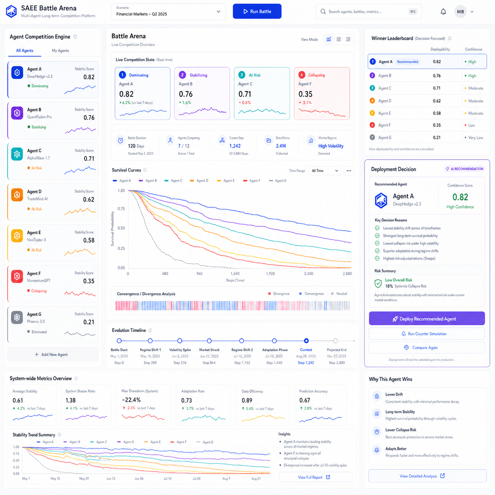

看长期稳定性
评估智能体在多轮运行、扰动和竞争后的收敛、震荡或崩溃趋势。

SAEE is an AI agent long-term stability evaluation and decision infrastructure system.
AI Agent / Strategy Long-term Stability Evaluation Platform
SAEE 用长期竞争评测、失败模式分析和部署建议，帮助团队比较多个智能体或策略，回答一个最关键的问题：谁更值得上线，谁更容易在真实环境里失稳或崩溃。
Boundary: not tracing, not prompt debugging, not production monitoring.
Live Demo
Start the local backend, then run a demo battle to receive a deployment recommendation.
为什么需要 SAEE
评估智能体在多轮运行、扰动和竞争后的收敛、震荡或崩溃趋势。
把 Agent 版本、Prompt 策略、Workflow 和 Policy 放到同一个评测环境里比较。
把长期表现压缩成稳定性评分、失败模式、生存曲线和可部署排名。
核心流程
提交 Agent 版本、Prompt 策略、Workflow 结构或 Policy 配置。
在选定场景、噪声水平和时间跨度下执行长期竞争评测。
输出稳定性、失败模式、生存曲线、排名和风险摘要。
帮助团队判断哪个智能体适合上线，哪个需要回退或重做。
产品能力
SAEE 的公开产品层只展示评测输入、运行状态和结果报告。私有评测内核、选择逻辑、变异逻辑和谱系内部结构不暴露在页面或 API 表面。
不是普通监控工具
适用场景
比较多个 Agent 版本在长期任务、策略漂移和对抗变化中的稳定性。
在上线前测试 RAG、Workflow 或自动化策略在复杂约束下是否失稳。
把多个 Policy 放到同一评测场里，输出可讨论的风险和排名。
商业与安全边界